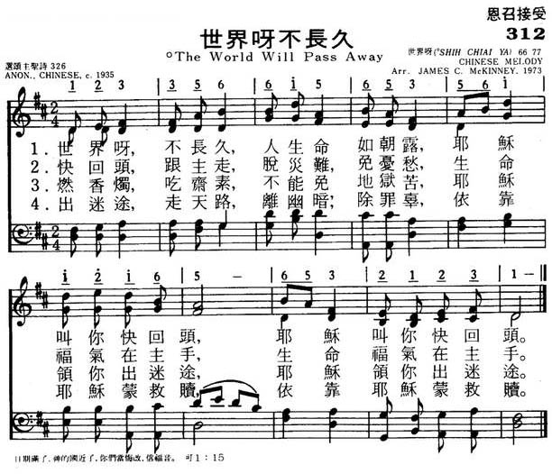

|
|
312世界呀不长久 |
|
|
|
|
https://www.mred365.cn/szxg/7315.html

|
|
|
|
|

LX1881
The World Will Pass Away
312世界呀不长久
[華]
这首歌作于一九三五年，作者佚名。在那个时代，中国人普遍受佛教的影响，烧香、拜佛、吃斋。作者针对这种现象，对人们作出规劝。
LX1881
The World Will Pass Away
312世界呀不长久
[華]
|
|
312世界呀不长久 |
|
|
|
|
https://www.mred365.cn/szxg/7315.html

|
|
|
|
|

LX1881
The World Will Pass Away
312世界呀不长久
[華]
这首歌作于一九三五年，作者佚名。在那个时代，中国人普遍受佛教的影响，烧香、拜佛、吃斋。作者针对这种现象，对人们作出规劝。
下面介绍的只是圣诗的歌词，不包括曲调。曲调的欣赏放在下一章。
中国圣诗和西方圣诗虽然在信仰是一致的，但思想方法和表达手法却不相同。笔者从手头上的一百多首中国创作圣诗中，挑选一部分优秀圣诗，分析它们的特点，与读者共赏。
西方圣诗在传福音时，多直接用圣经的比喻，如：羔羊、十字架、宝血和赎罪等；中国圣诗却用通俗的语言、故事的形式，形像化地描述神的爱和救恩，使人容易理解和接受。
归家乐 （普585）
这首诗虽然作于一九零七年，但文字通俗、浅白、内容清新。它用故事的形式传福音，规劝世人离罪悔改，十分形象化和生动，容易为人理解和接受。
1、茫茫原野人无数， 终日昏昏在迷路，
久已离开安乐家， 可怜不识慈恩父。
2、前途愈走路愈暗， 引路原来是撒但，
一直趋向无底坑， 茫茫何处寻道岸。
3、真光幸喜从天降，一直射到迷途上；
忽有一人目乍开，始觉从前皆魔障。
4、天军一见乐无涯，连忙招手唤进来，
你若欲脱穷途苦，及早回头投父怀。
5、圣父仁慈莫与比，恩门特开因待你，
至今待你已多年，你若归时父必喜。
世界呀，不长久 （颂335）
这首歌作于一九三五年，作者佚名。在那个时代，中国人普遍受佛教的影响，烧香、拜佛、吃斋。作者针对这种现象，对人们作出规劝。
1、世界呀，不长久，人生命如朝露，耶稣叫你快回头。
2、快回头，跟主走，脱灾难，免忧愁；生命福气在主手。
3、燃香烛，吃斋素，不能免苦地狱；耶稣领你出迷途。
4、出迷途，走天路，离幽暗，免愆尤；依靠耶稣蒙救赎。
劝君仔细听真道（颂340）
1、劝君仔细听真道，真道实在好，莫要错过了。生命筵，白吃饱，分文也不要。若不信真主，地狱怎能逃？
在主震怒下，必有大恶报，劝你醒悟，信主耶稣，以祂为依靠。
（下略）
人心极坏 （颂新285）
1、人心坏到极处，满诡诈仇恨，不能补，不能修，重生是根本。
2 、人心本有污秽，自己洗不净，又是黑，又是坏，主血能洗清。
3、人心本如石头，自己化不开，又是硬，又是冰，靠圣灵能解。
4、人心都有毛病，自己看不好，不论大，不论小，耶稣能治疗。
副歌：凡来求耶稣，祂能救到底，要认罪，依靠主，罪担就脱离。
下面又是一首用故事的形式传福音的圣诗，没有作者姓名，曲调用《苏武牧羊》。
浪子回头 (《赞美诗歌》
207)
1、浪子落魄胡不归？遍地是荒年，叫苦声连天。
食断餐，衣露肩，落魄有谁怜？
牧猪谋一饱，豆荚也垂涎，受尽苦中苦，方知悔从前。
忽闻头上归林鸟声，入耳动辛酸。
2、极目茫无边，父家望云烟，裕口粮，富金钱，仆佣满庭前。
求生作归计，见父乞垂怜，莫当娇儿看，服役愿执鞭。
归去来兮羞见故乡，依然美山川。
3、凛凛北风吹，雁往南飞，慈爱父，盼儿归，门前日徘徊，
忽见陌生人，辨貌是儿归。趋前忙怀抱，往事概不追。
更衣穿鞋，宰牛开筵，共举庆祝杯。
4、浪子是何人?诸君请细听。神造人按己形，怡然父子亲，
背命绝神交，负罪趋沉沦。悬崖忙勒马，蒙恩庆重生，
失而复得，死而复生，欢腾圣天庭。
复活喜讯歌（《赞美诗新编》110）
西方的复活节歌都以欢呼、歌颂耶稣的复活为内容，但这首歌却以述说耶稣复活向信徒和门徒显现的故事为内容：
1晨曦朦胧中，女徒行匆匆，觐主携香膏，不料墓已空；
忽闻主呼唤，仰见主慈容，急返门徒间，喜讯乐传送。
2小楼寂沉沉，门徒愁意深，不明十架路，忘却神大能；
忽见主显现，探得主伤痕，疑虑顿消失，喜乐溢愁魂。
3我主屡显现，众徒益非浅，信心倍鼓舞，爱心频频添；
愿喂主小羊，甘苦由主遣，复活生命泉，涌流万万年。
（副歌略）
中国自古以农立国，农民占了人口总量的百分之八十，可惜他们往往是现今被忽略的传福音的对象。三十年代著名的圣诗作者赵紫宸却有几首圣诗反映农民信徒的的生活和虔诚的心思，如《清晨歌》和《谢恩歌》。
清晨歌 （普472）
1、清早起来看，红日出东方，雄壮像勇士，美好像新郎；
天高飞鸟过，地阔野花香，照我勤工作，天父有恩光。
2、恳求圣天父，将我妥保存，行为能良善，颜色会和温；
虚心教小辈，克己敬年尊，常常勤服务，表明天父恩。
3、但愿今天好，时刻靠耶稣，头上青天在，心中恶念无。
乐得布衣暖，不嫌麦饭粗，千千万万事，样样主帮扶。
谢恩歌 （普511）
l、赞美圣天父，恩典广无量。春风与夏雨，秋收又冬藏，
粟米像珍珠，庄稼有清香。工作虽劳苦，生活得安康。
2、赞美圣天父，保佑我乡农。父叫万物长，父使五谷丰。
我来献感谢，高唱乐无穷，颂扬好生德，荣耀造化功。
（用《孔庙大成乐章》调）
下面这首规劝歌所用的比喻「粮万担」，从未到过农村的人是不熟识的，因为城里人称粮食不用「担」作单位。歌词作者用粮食和金银作比喻，也是站在农民的立场，因为城市人只要有钱，就不愁粮食了；但农民是靠自种粮食去换钱，种不出庄稼，哪里来的钱？
有主当知足 （《赞美诗歌》259）
家有粮万担，一日只三餐。若有金银堆成山，只能看一眼。
不要贪哪，不要贪，赚得世界赔上生命，真是不上算。
有衣有食当知足，时时靠主得平安。
感谢主，赞美主，跟随基督乐无边，
感谢主，赞美主，跟随基督乐无边。
有些中国圣诗作者将儒家思想反映在所写的圣诗上。中国古代思想家曾子说：「吾日三省吾身：为人谋而不忠乎？与朋友交而不信乎？传而不习乎？」于是朱葆元一九二九年作了《三省歌》：
《三省歌》（颂新418）
1、一省我身：信道有年，与主睽违，物质为先；父母、伯叔、兄弟、姊妹、合家拜主是否虔诚？
2、 二省我身：受浸有年，曾否为主传道力专，曾否在家福音宣传，心清意洁，圣灵宝殿？
3、三省我身：从主有年，曾否为主作证人间？光阴似箭，事主努力，日月如梭，信仰弥坚？
副歌：
门墙主化，光照在前，分工合作，福德无边。
许多中国圣诗文字通俗，构思简朴，使人唱起来有亲切感并能引起共鸣。下面这首反省歌就是这样。
回头蒙恩 （颂新288）
1、这些日子真是亏欠神，时常犯罪，体贴老肉身；
不是起骄傲，就生妒忌心，看人不如我，背后论断人。
2、聚会时间，坐下就打盹，诗歌不唱，祷告心不纯，
圣经不愿看，听道不入心，应反省自己，是个什么人。
3、从今以后，发起火热心，改变一切，除去罪恶根，
天父喜欢我，救主赐宏恩，圣灵充满我，时常赞美神。
中国的教会，在一个相当长的时间里遭到迫害，传道人被抓，教会被迫停止聚会，下面这首诗载于家庭聚会使用的圣诗集《赞美诗歌》，反映了教会和信徒受迫害的情况，以及牧者和信徒的心情。
凄风苦雨 （《赞美诗歌》274）
1、多少年凄风苦雨，多少次狂风暴雨，风雨里不见了神家的院宇，祭坛上撒下了亚伯的心血。神的葡萄树啊，你在哪里？神的香柏树啊，你在哪里？你在哪里？你在哪里？
2、一声声小羊哀鸣，一个个离羊伤心，草场上失落了耶和华的羊群，凄风里洒下了忧伤的眼泪。羊的好牧人啊，你在哪里？羊的护卫杆啊，你在哪里?你在哪里？你在哪里？
3、梦里的耶路撒冷，泪里的耶路撒冷，寻找你寻你在祭坛的火中，寻找你寻你在十架的钉洞。走出流泪谷啊，还有几程？走回天上家啊，还有几程？还有几程？还有几程？
这首诗的感情，若不是亲身经历过的人，是写不出来的。特别是第三段，描写失落的羊群寻找神的家，历尽艰险，要在「祭坛的火中」去找，要在「十字架的钉洞」里去找；因为在那些日子里，人们的虔诚只能隐藏在内心，红色风暴下，宗教活动连想转入地下都不可能。在那种形势下，看不到一线光明和希望，这些苦难，不知道还要熬到何时，甚至渴望回天家，也不知道还有多少路程要走。这是多么的无奈和悲哀呀！
圣诗里不乏借描写美丽的大自然来歌颂赞美神的内容，但陈泽民的杂言诗《神工妙笔歌》，却从描写景物到把自己熔入，想象到参与神创造世界的伟大事业，直到主再来，让新天新地实现于人间，这样气魄的圣诗不很多。
神工妙笔歌 （《赞美诗新编》178）
l、平沙一片无穷极， 万籁悄然静寂。
落日红霞映海空， 列雁翩翩归憩。
我愿化身为飞鸿， 翱翔俯瞰大地。
祖国山河无限好， 皆主神工妙笔。
2、三江五嵚皆主恩， 平川沃野无际，
历代辛劳血和汗， 装点更加瑰丽。
愿我信众随先哲， 世世相承勿替，
共参神妙造化业， 与主同工同契。
3．努力建设新世界， 和平、仁爱、公羲。
高擎十架证圣道， 宣扬基督真理。
紧偕人民同一心， 自立自强不息。
瞩望采日功成时， 蓦见新天新地。
许多齐唱新歌都反映了时代气息，把传福音和现实生活结合起来。但是「新歌」的作者对人情世故的体会感受特深，对那些苦受生活煎熬者、甚至厌世者表达认同，但同时指出福是唯一的出路与盼望。如广州方言歌《新音讯》：
《新音讯》
（《齐唱新歌》4.5.6．合集，翁慧韵作）
1、环视世界可爱的土地， 盼望和平自由植万家，
谁料今天都市多冷漠， 路人邻居不会为友。
人群掠过，每日经过， 彼此远拒满面带惊怕，
求能用爱载住关注， 消解隔膜颂和平。
2、环视世界可爱的土地， 盼望和平自由植万家。
谁料今天家国多战乱， 世仇邻邦不会为友，
人怀恨怨、妒忌、争斗，不知世界那日会相爱；
全能上帝创造本意：家国快乐享和平。
（副歌）
新音讯，将咒语变音乐；新音讯，求和平天天播。
新音讯，传递那真善美，盼这音讯传万里。
新音乐，乘着祝福至，盼这音讯感染你。
下面又是一些嗟叹世态炎凉、人情冷暖的诗句，西方圣诗甚少见，传统的中国圣诗也不多涉及，但在香港的齐唱新歌中却屡见不鲜。
现代人内心难互通， 多少看功利来交往！
现代人是非难辨清， 多少看景况做事情！
（翁慧韵：《来发光》）
在世间空虚孤寂， 内心有唏嘘叹息，
在社会人脸冷酷， 相对彷似是劲敌，
在世间千般压力， 实在已心感困迫。
（张秀丽：《恩赐》）
社会竞争激烈，生活艰难，新歌的作者深感人生路途险恶，祈求上主带领：
此刻身心已倦，就像是只破冰船，周围多冰冷，茫茫路向未可见，默默去闯苦撑到底。我要开辟荒原，但是这刻我确实疲倦，哪里是岸可见？
（潘源良：《破冰船》）
荆棘满路途，双足无力行，试问谁能明白我艰难?
恩主我仰望，天天支撑我，似是绝路亦会跨过。
（梁碧君：《靠主飞腾》）
https://wemp.app/posts/5c9bf40c-5a66-486e-842b-44e63b93583f?utm_source=latest-posts